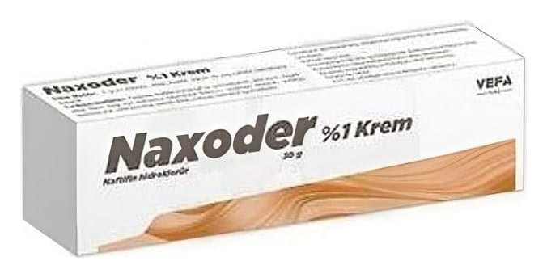

Naxoder %1 Krem, 30 Gram

Ne için kullanılır
KT · Bölüm 1NAXODER naftifin isimli etkin maddeyi içerir ve mantar enfeksiyonlarının harici tedavisinde kullanılır. NAXODER deri mantarları, maya mantarları, küf mantarları ve diğer mantarlara karşı etkinlik gösterir. NAXODER aynı zamanda mantar enfeksiyonlarında sıklıkla oluşan farklı birçok bakteriye karşı da etkilidir. NAXODER’in iltihap giderici etkisi iltihap belirtilerini ve özellikle kaşıntıyı hızla azaltır. NAXODER 30 g’lık tüplerde bulunan bir kremdir. NAXODER deride oluşan aşağıdaki mantar enfeksiyonlarının lokal tedavisinde kullanılır:
• Deri veya deri kıvrımlarının mantar enfeksiyonları (kızarıklık, pullanma ve şişkinlik ya da kaşıntılı kabarcıklar olarak görülür) • Parmak arası mantarları • Tırnaklarda görülen mantar enfeksiyonları • Derinin kandida enfeksiyonları (Candida türlerinin sebep olduğu mantar enfeksiyonu) • Pityriasis versicolor (deri yüzeyindeki bir mantarın aşırı üremesi ile oluşan sık rastlanılan bir deri hastalığı) • İltihaplı deri mantarlarının (kaşıntılı veya kaşıntısız) tedavisi için kullanılır.